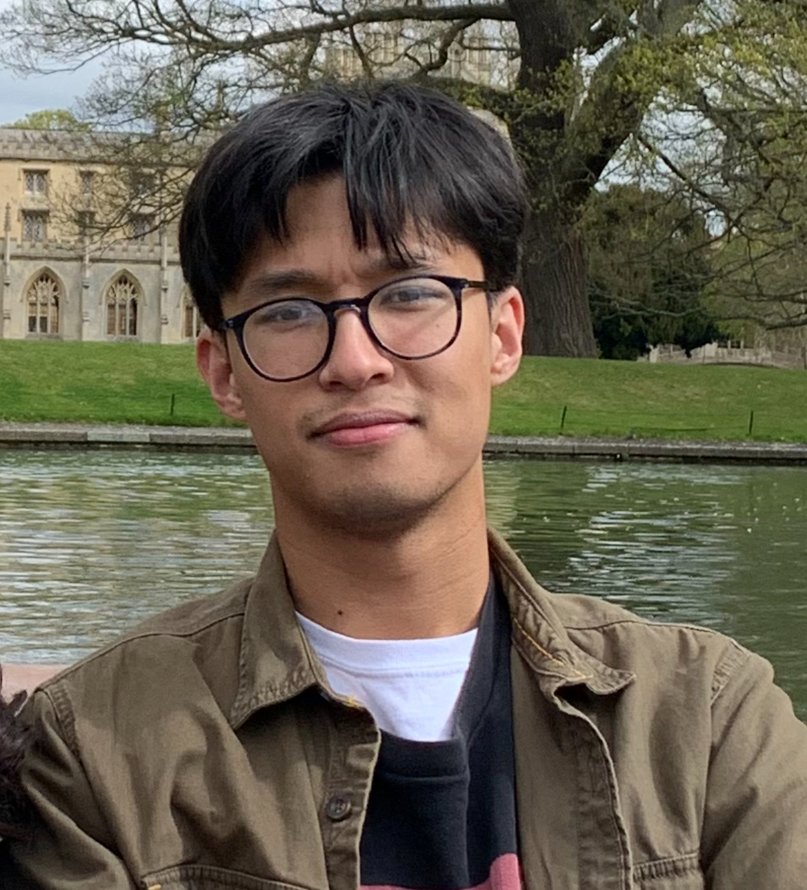

Ashesh Bati

I'm Ashesh Bati, currently a graduate student at the
London School of Geometry and Number Theory (LSGNT). I am interested in algebraic geometry, and currently I'm working on vector bundles and Bridgeland stability. I'm also interested in neighbouring areas such as enumerative geometry, and anything to do with sheaves. Before this, I did my masters' and undergrad at Cambridge (where I briefly also liked to think about number theory).
I am a student of Soheyla Feyzbakhsh and Richard Thomas.
My CV is here.
Email: a[dot]bati24[at]imperial[dot]ac[dot]uk
Patrick and I organised the LSGNT lunch seminar in Autumn 2025.
Maths
I'm interested in sheaves, bundles on curves, and stability. In particular, I like to work with their moduli spaces, and I often think via the derived category. Broadly, I work in Algebraic Geometry.
Right now, I'm looking at curves on K3 surfaces, and how this condition affects certain Brill-Noether loci on these curves, as well as how bundles on these curves affect sheaves on the K3 surface.
Things I've focused on before: the Wahl map on canonical curves, derived categories of nodal threefolds, and enumerative invariants and wall-crossing formulae (e.g. DT/PT).
Travel and talks
- Upcoming:
- 03/26: Homological Algebra in Algebraic Geometry and Representation Theory, Salerno, Italy
- Conferences attended:
- 09/25: A tour through Algebraic Geometry: a conference for the 60th birthday of Alessio Corti, Cortona, Italy
- 07/25: Summer Research Institute in Algebraic Geometry, Colorado, USA
- 07/24: LMS Invited Lectures: Logs and Stacks, London, UK
-
06/24: INI Moduli stacks and enumerative geometry, Cambridge, UK
-
01/24: Equivariant methods in geometry, Cambridge, UK
- Talks given:
- 02/26, HPD reading group
- HPD, families and proofs
- 02/26, Derived Obsessed Graduate Students: Curves on K3 surfaces and wall crossing
- 10/25, Imperial Junior Geometry Seminar: K-theory and Intersection Theory
- 6/25, Virtual classes reading group
- Deformation to the normal cone
- Obstruction theories for projective varieties
- 5/25, Imperial Junior Geometry Seminar: Conifold transitions and Absorption
- 5/25, Mini-project presentation: Conifold transitions and Absorption
- 3/24, Cambridge Part III seminar: Gromov-Witten Theory
- 3/24, Cambridge: Deformation theory reading group
- Tangent-obstruction theories
- Components of the Hilbert Scheme
- Moduli of elliptic curves
- 12/23, Cambridge Part III seminar: Ramification and the Etale fundamental group
- 11/23, Cambridge: Moduli of curves reading group
- Moduli problems